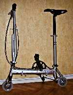
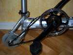
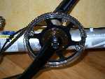
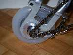
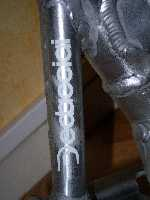
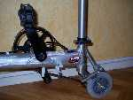
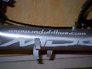
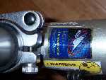
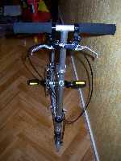
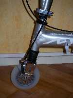

ParaBicychologie
- Accueil >>> Bicyclette Mini 125
Bicyclette Mini 125. Site officiel : mini125
Marque : Mini125, marque italienne, par Giuseppe Ganio.
Type : Mini bicyclette pliante à roues de 5 pouces ( 12,5 centimètres ) de diamètre, le pignon de la roue arrière (8 dents) et la chaîne sont des équipements de mini moto, plateau de vélo de piste, cadre en tube Dedacciai, poids total 6 kilos ; fabrication italienne.
Cliquez les vignettes pour ouvrir les photos en grande taille (s'ouvrent dans une nouvelle fenêtre.)
|  |  |  |  |  |
|  |  |  |  |  |
Ci-dessous une vidéo de la bicyclette Mini125 en circulation
La mini 125 dans la vidéo est la dernière version produite, la mini 125RD pliable et non plus démontable.
Website © Copyright - ef.BicyGonzo.